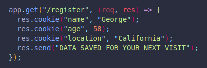
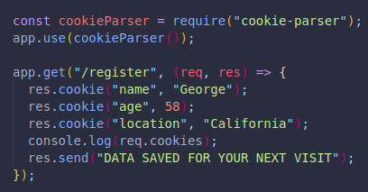
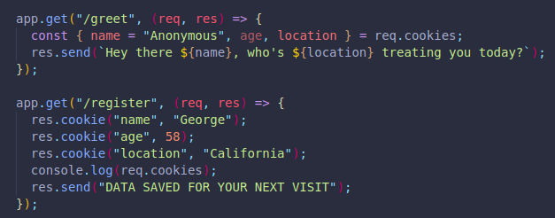
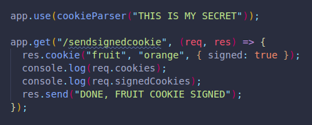

HTTP cookies are ways to track user data, there has been much legislation regarding them.
They are bits of information we can store in a user's browser, associated to specific webpages.
The user's browser sees them in future visits. Otherwise, there would be no history of if someone had ever visited our page before. It can be used to remember a user's shopping cart, dark mode preferences and many other things.
It helps us show relevant content and offer a more personal experience. No need to ask every single time for these details.
Most importantly, they are used for tracking, since many webpages sell user information for publicity reasons.
They are unique identifiers that can tell any two user's apart. THese name and value pairs show things like last access date.
We should use them for ethical things, such as knowing if a user is logged in, where they are logging in from (For security reasons and user account protection. ), etc.
To send a cookie, we must use the cookie() method on our response argument/object.
It will take two arguments:
If a new value is added to our key, the old one will be replaced.
We can see all cookies from the browser's Dev Tools or by making a request with an API tool like Postman and viewing the cookies section.
We can also specify additional things to configure and control them better, for example:
And we can include as many cookies as we want in a specific request path.
If we want to use the stored cookie data, we can find it in req.cookies.
Since a lot of application don't make use of cookies, the parser package we need to do this is not installed by default.
We can install it with npm i cookie-parser.
We must save it to a variable by requiring it, and declare an app.use() with the function being executed inside it.
Now we can access to req.cookies.
If we were to console log req.cookies, we would see an object with every key value pair of cookies.
We can use them in a string template literal for a more personal experience.
Here we destructure req.cookies and make use of 2 of the key's values.
(In case name is empty, we have set a default value of 'Anonymous')
We could close the browser and reopen it, and we would still have access to that data, since it is stored in a local file on the computer.
This does not work across browsers, which is why we should not store important information in cookies.
Signed cookies include a digital/cryptograhic signature.
We use it to verify if there has been any changes.
It's like a broken seal in a food product.
The cookie parser signs it, and sends a weirder looking version of it to the client. Then, that signed version is sent back like a regular cookie.
On the server side we can tell if they are the same values sent, or if they've been modified in any way, if it has been compromised or if it is still the same.
To do the cookie signing, we must pass in a "secret" to our app.use(cookieParser()).
This "secret" is simply a string we can make up, although in the real world it would be much more secure and hidden from view, we would need to take special security measures to assure this.
We must also include a third argument in our res.cookie(), so other than the key name and value, we must add { signed: true }.
The resulting cookie value, which is different from a non-signed cookie with the same value, will have the value somewhere in it. The point is not to hide the value, but to verify the integrity/validity, that it hasn't changed or been tampered with!
One thing to notice is that the key and value of our signed cookie would not show if we were to console log req.cookies.
To view it, we would need to change it for req.signedCookies, which only works if we have our parser installed, and we included a "secret" in our app.use(). This is to make a clear distinction between the cookie types.
If for any reason we were to change the cookie value in the Dev Tools, or through an API tool, we again would not see the key value pair, even if console logging req.signedCookies.
This is because the cookie-parser failed to verify the cookie.
HMAC stands for Hash Message Authentication Code.
This is the method used to compare the original key value with whatever the current one is. It also takes into account the secret key to try to recreate a code and compare it with the original code. It does this by calling a function.
If they don't match, we know it was changed.